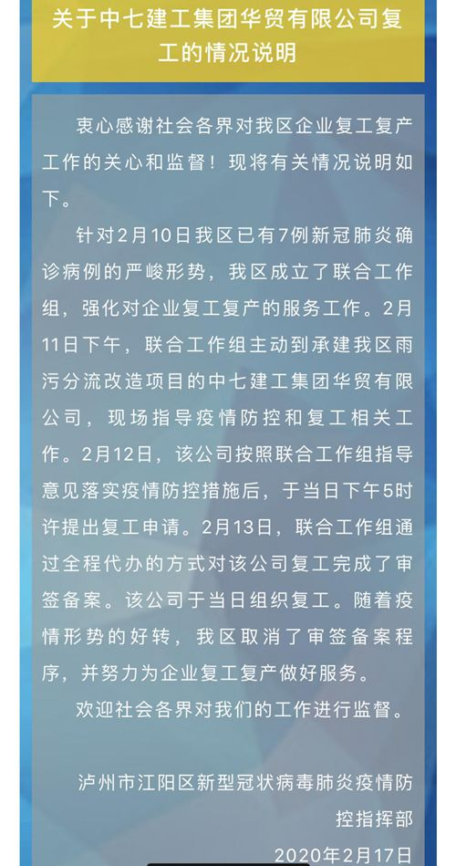

抗“疫”之下，企业复工如何安全破局？
原文链接 备份链接 暂停过后，安全重启 “按照年前的计划，1月31日开工以后这批订单马上就出货了。现在不仅老订单推迟交付，其他业务也基本暂停了。”某机床零配件加工厂的老板林浩坦言，疫情对厂子最大的影响就是产能和物流，随之而来的就是日渐吃 …

本报记者 郝嘉奇 郝成 北京报道
一家环保企业复工需要八个单位盖章，此事在网上引起争议。2月12日，中七建工集团华贸有限公司提交了复工申请表，并在四川省泸州市江阳区新型冠状肺炎疫情防控指挥部的要求下，由八个单位盖章审批后复工。

网传的《复工申请表》显示，该公司申请复工理由为“江阳区主城区雨污分流改造项目属于泸州市委政府重大民生工程，环保工程，加之工期紧，任务重”。
下方，有属地镇街（园区）、区应急管理部门、区生态环境部门、区卫生健康部门、区政府分管领导、区防疫指挥部等八个单位签字盖章同意。

审签备案程序已取消
2月17日下午，《中国经营报》记者联系到江阳区应急管理局，工作人员表示，之前确实需要审核，但这家企业复工一天内就完成审核了，也没有等待太久。
记者也联系到在复工表上签字的泸州市江阳生态环境局蒋永强。他告诉记者：“我们相关工作根据指挥部安排，具体有什么需要了解的请致电江阳区疫情防控指挥部。”
指挥部办公室工作人员证实，根据之前的通知，环保企业复工确实需要盖章，每个行业不一样，环保企业需要盖八个章，但政策会有一些调整，企业不着急复工的话可以等等。
江阳区委宣传部账号“江阳发布”17日发布此事情况说明：政府部门是通过全程代办的方式对该公司复工完成审签的。随着疫情形势的好转，已取消审签备案程序，并努力为企业复工复产做好服务。

对此，有舆论认为疫情防控还在关键时期，对复工严格把关，肯定是必要的。但让那么多部门盖章同意，有点过分了。
舆情观察员@嘉善老顾 说，政府要做的，一是帮助企业解决疫情防控必须的物资，二是派人下沉到企业，给企业实实在在的指导，让给企业的承诺能够真正落地，而不是一纸空文。
在接受记者采访时，暨南大学副教授、广东省安全生产应急专家卢文刚说，在安全生产领域，如果没有发生疫情，环保企业每年节后复工本就是需要多部门审批的，而从2月10日江阳区已有7例新冠肺炎确诊病例的严峻形势看，因为疫情防控还在关键时期，审签备案在当时是必要的。
他还分析，从这张复工表来看，基层政府是严格规范履行程序的。而多个单位签字盖章，是目前全国层面的安全生产和应急管理监管“九龙治水”和“铁路警察各管一段”的体制所决定的，不能在此疫情防控形势下苛责这样一个履行属地管理责任的基层政府。
此外，当地复工复产审签备案的效率是值得肯定的。卢文刚说：“2月12日，该公司按照联合工作组指导意见落实疫情防控措施后，于当日下午5时许提出复工申请。2月13日，联合工作组通过全程代办的方式对该公司复工完成了审签备案，该公司于当日即组织复工。一天内完成审批能体现政府一站式服务的速度。”
江阳区人民政府官网显示，江阳区区委书记杨长缨2月14日带队督导复工复产工作强调，相关部门和镇街要主动开展复工复产上门服务，严格落实相关扶持政策，切实降低企业负担。
有企业需填21份材料
2月18日，东莞一家印刷公司负责人表示，公司于18日申请复工时填了很多内容相同的表，要分别交给社区、街道及其不同的部门。他表示由于公司申请复工的人不多，填一个多小时填完了，如果人多，则需要耗费大量的时间。
他建议，政府部门应充分利用大数据管控，用一个端口管理，公司复工不必层层报、时时报。“否则智慧城市不如表格管用。”
据记者了解，深圳一家待复工企业的情况则是：复工要提交申请资料，并盖公章。公章在办公室，但办公室被封锁了，资料没办法提交。可是不审批通过的话，就没法进入办公室。
据《新华每日电讯》报道，近期有不少申请复工的企业负责人抱怨，企业想复工需要填15个表格、2份承诺书，制定1个应急预案、1个复工方案、1套食堂防护措施和1套宿舍防护措施，共计21份材料，有些材料还需要去街道盖章。
其中有不少表格是重复的。仅“复工企业上岗人员”这一项，就需提交4份表格——首批上岗人员汇总表、首批上岗职工健康统计表、后续需上岗职工健康统计汇总表、后续需上岗职工健康统计表，且每份表格都需要企业盖章。这些表格看起来设计得严丝合缝，却忽视了企业的具体情况：比如，有些企业可能一次性全员复工，有些企业用工流动性很大，后续上岗人员无法确定等。
2月11日，国家发展改革委社会发展司司长欧晓理在新闻发布会上表示：“我们注意到，在防控期间，很多地方都出台了很严格的限制人员进出措施。比如，有的地方还对企业的复工复产采取了报备制度，有的设置了前置审批条件，甚至还有个别地方出现了拘留提前复工企业负责人的情况。这些做法是不符合加强疫情科学防控、有序做好企业复工复产的中央精神的。此风不可长。在这里明确和大家说，我们将严格制止以审批等简单粗暴方式限制企业复工复产的做法。”
欧晓理还说：“我们充分理解一些地方希望进一步压实责任，严格做好疫情防控工作、防止疫情扩散的良苦用心，也非常赞同在开复工过程中严格督促企业落实防控机制。但是我们不能简单化地通过设置审批条件、提高开复工门槛等办法，来达到防护目的，而是应该用更多的时间和精力去指导、关心、帮助企业解决疫情防控和开复工中碰到的实际问题。”
（编辑：郝成 校对：翟军）


推荐阅读
点击大图 |跨省追捕、5天宣判 多地公检法稳准狠打击“口罩诈骗案”
点击大图 |国家卫健委专员：新冠肺炎虽是新发传染性疾病 但可防可治

原文链接 备份链接 暂停过后，安全重启 “按照年前的计划，1月31日开工以后这批订单马上就出货了。现在不仅老订单推迟交付，其他业务也基本暂停了。”某机床零配件加工厂的老板林浩坦言，疫情对厂子最大的影响就是产能和物流，随之而来的就是日渐吃 …
原文链接 备份链接 澎湃新闻记者 陈绪厚 定制务工人员高铁专列，包大巴车甚至包飞机接工人返岗，给予新招工人生活补助，来求职补贴路费甚至包食宿，企业新招工人给予奖励补贴…… 澎湃新闻（www.thepaper.cn）梳理公开报道发现，为助力 …
原文链接 备份链接 澎湃新闻记者 邹娟 “终于可以解禁了！”2月16日，在上海自贸区上班的沈蔚明在朋友圈写下这句话，并配上一排笑脸表情。 沈蔚明是公司项目主管，自从2月3日从老家回到上海，沈蔚明已经在公司安排的人才公寓自我隔离了14天，2 …
原文链接 备份链接 经济观察报 记者 叶心冉 上海报道 2月12日，苏州工业园区经济发展委员会公布数据称，辖区目前“三必需一重要”（涉及保障公共事业运行必需、疫情防控必需、群众生活必需及其他涉及重要国计民生的相关领域）企业100%开工，规 …
原文链接 备份链接 经济观察报 记者 种昂 2月4日，一批5万只口罩由一辆货车缓缓运进了江苏某汽车配件工厂的大门，刘天元总算松了一口气。作为这家民企高管兼内部疫情防控的副总指挥，他肩负着企业复工的重担。此时，刘天元似乎看到了复工的希望。 …